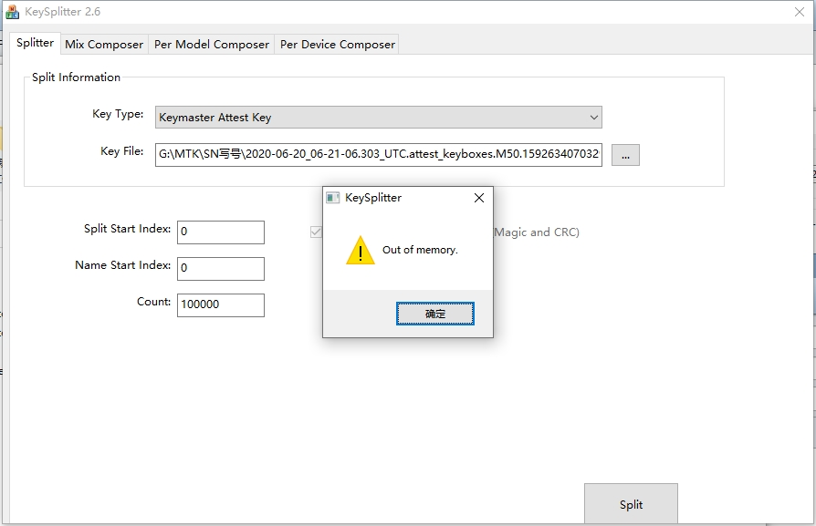
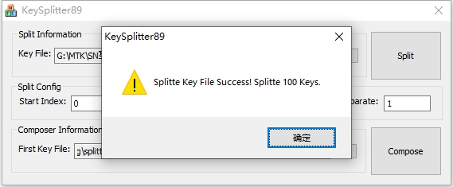
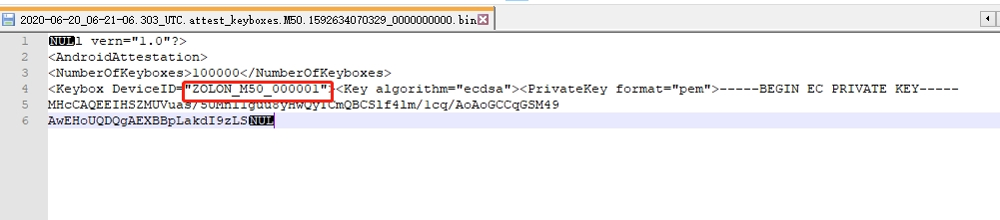
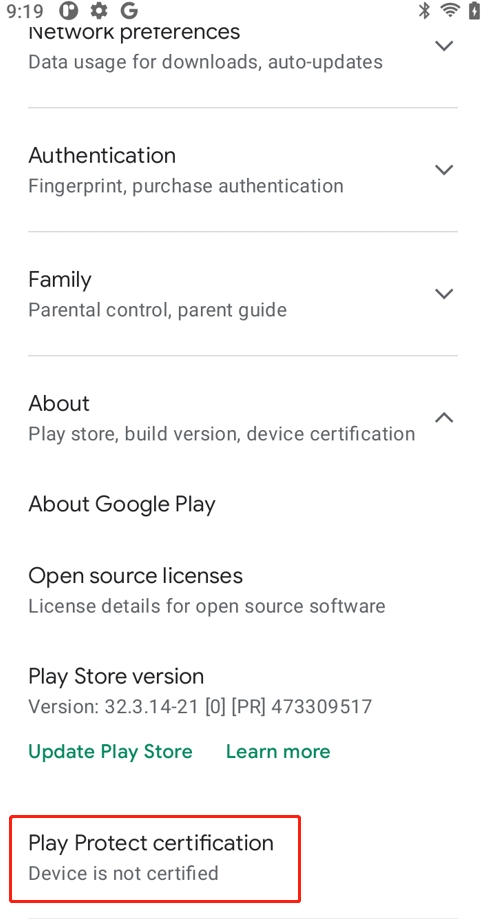

google
感觉上google attestation key跟瓶钵没有关系，尝试自己实验。
refer
实验
1.按照参考文档使用KeySplitter2.6尝试自己分解attention key，提示out of memery，可能需要最新的分解工具。

使用另外版本的KeySplitter89进行分解，提示分解成功，并成功生成key文件：

但是从key deviceid发现是android 10的，分解出来的key也是烧录失败的，鸿祥源并没有提供Android 11的keybox给我们。

2.绍海提供了一下google官网下载的key文件，经验证可用CA的方式烧录进去(修改或者其他文件烧录失败)，烧录步骤如下：
(1) adb push G:\G2020PR_V2_BF_xxx_M5x_R_5978.bin /data
(2) adb push G:\kmsetkey_ca /data
(3) adb shell ” chmod a+x /data/kmsetkey_ca”
(4) adb shell “/data/kmsetkey_ca -i /data/G2020PR_V2_BF_xxx_M5x_R_5978.bin” 提示写入成功：
kb_len = 9568
Calling attest_key_install...
attest_key_install = 0
(5) 验证googkey部署也是成功的：
adb shell " getprop | grep vendor.trustkernel.keybox.deployed"
[vendor.trustkernel.keybox.deployed]: [true]
(6)但是登录google账户，查询google认证结果显示设备未认证：

结论
我们应该是可以进行google key的分解工作。
鸿祥源并没有提供Android 11的keybox给我们。
从官网上下载的key文件烧录成功，但是我们没法激活TEE，设备也是显示设备未认证的。